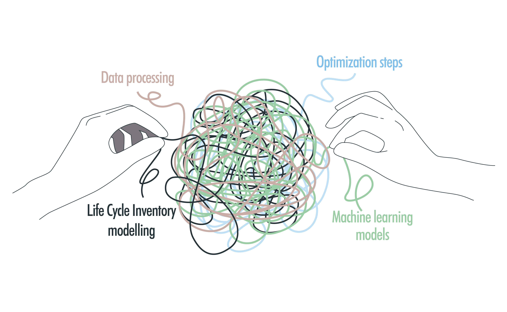
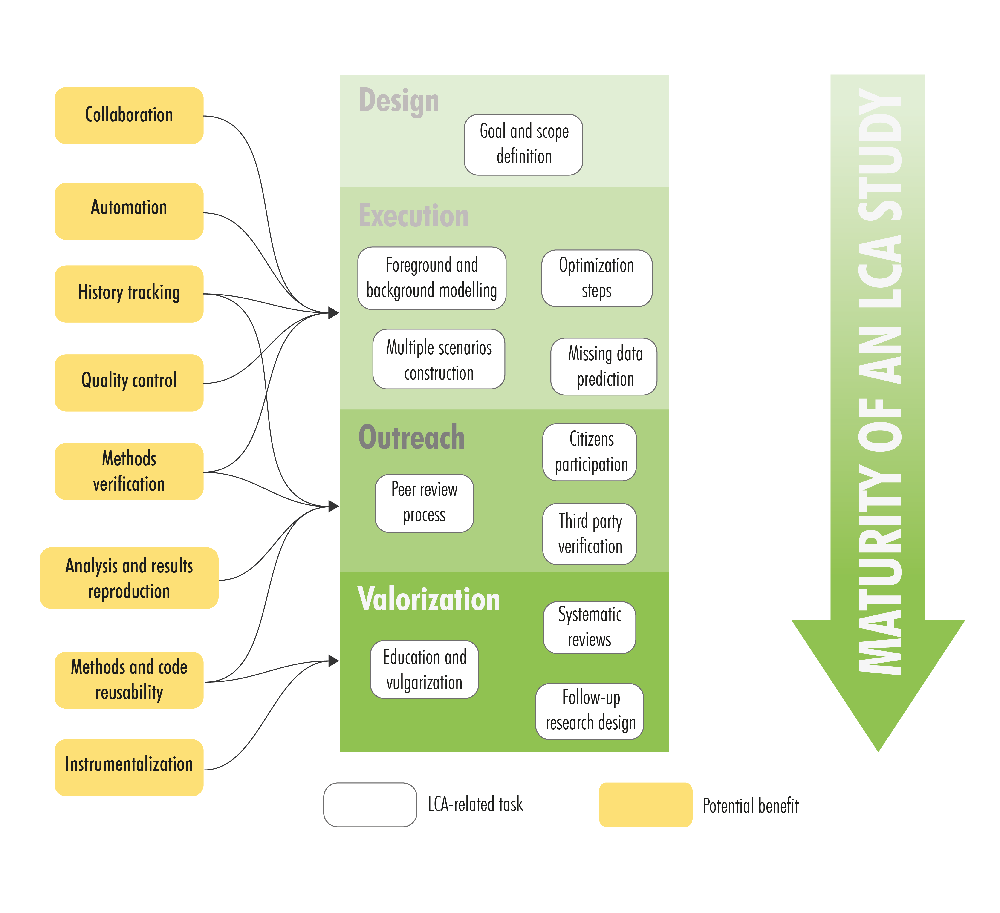

Motivation#
In the past decades, scientists have accepted computation as a branch of scientific investigation in addition to conventional deductive and empirical branches. Nowadays, Life Cycle Assessment (LCA) steps, such as the Life Cycle Inventory (LCI) building, rely more and more on computational methods to address complex scientific inquiries. This happens because current LCI practices go beyond the mere accounting of static supply chain models since they now require to integrate conventional LCI calculations (e.g., matrix inversion) with distinct computational operations. New modelling steps like parametric and algebraic formulations [1], prospective LCI models [2], and data-driven predictive pipelines [3] have been incorporated into LCA through novel workflows that include methods that stem from foreign domains.
{kind=link}
Disentangling modern LCA workflows
The sophistication of modelling workflows comes with a price since it adds another layer of difficulty when it respects to providing a transparent, comprehensive and reproducible description of the LCA study. Such reproducibility is important since it is a fundamental element in the development of any scientific field. While the necessity of incorporating transparency principles in LCA has been discussed [4], not much attention has been provided to the lack of reusability and reproducibility of the methodologies and calculation workflows that are used in the LCI step. While useful, existing standards and data formats (e.g., ISO 14048) are designed to contain data specifications, but not to necessarily enhance the reproducibility of the shared data nor the LCA study itself [4]. This implies that the reproduction of computational workflows that generated certain LCI data depend on the clarity of the report or manuscript accompanying such data, which can vary depending on the LCA practitioners.
To address this issue, we propose this protocol prototype as a founding stone in a, hopefully, collective and concensual effort to set a formal protocol to support the design and reporting of LCA-related methodological workflows.
Why a protocol?#
A protocol can help practitioners by guiding them with a variety of practices and recommendations that can ensure that minimum conditions are considered when for reporting programmatic LCA workflows. As the long term, the compliance of a protocol can help to enhance the transparency and reproducibility of Life Cycle oriented workflows. This site presents a first prototype of the protocol that consists on guidelines and checkpoints for LCA practitioners that can facilitate the generation of reproducible research outputs. The main structure was built following current practices used in other research fields in combination with the needs of programmatic LCA. This means that protocol compliance could have direct benefits along the (no pun intended) LCA study lifecycle.
While preliminary, we analyzed the potential implications of the usage of the replicability protocol in the different stages of maturity of an LCA study.
{kind=link}
Potential benefits of a protocol.
As it can be observed in figure above, protocol compliance can provide early benefits to the practitioner in terms of facilitating collaboration due to the enhanced quality control, and the availability of history tracking. Moreover, this can also ease the verification of methods and workflows at early stages of the modelling. In a similar manner, protocol compliance can also accelerate the peer review process since reviewers can quickly verify the model overview, identify bugs, or reproduce the results presented in a manuscript. Additionally, the adoption of the protocol can serve to valorize the findings of an LCA study since the protocol promotes the reusability of the code, modelling workflows, and generated data. The high modularity of the workflow and the followed coding style can facilitate the instrumentalization of the outputs, which can serve as inputs in the design of follow-up research.